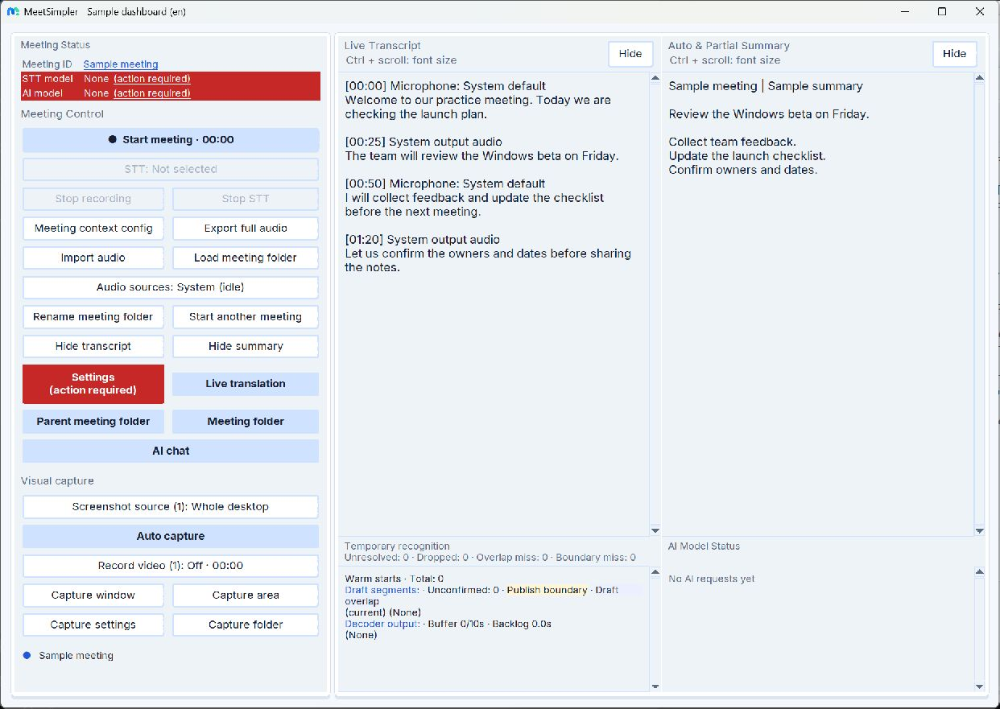
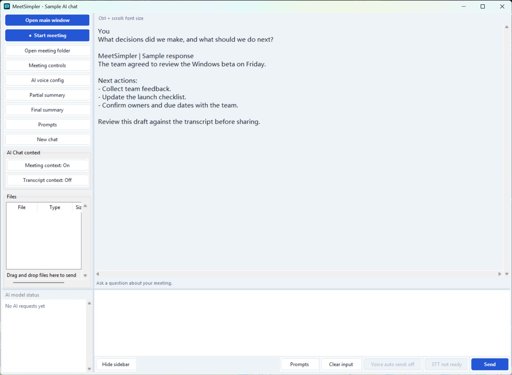
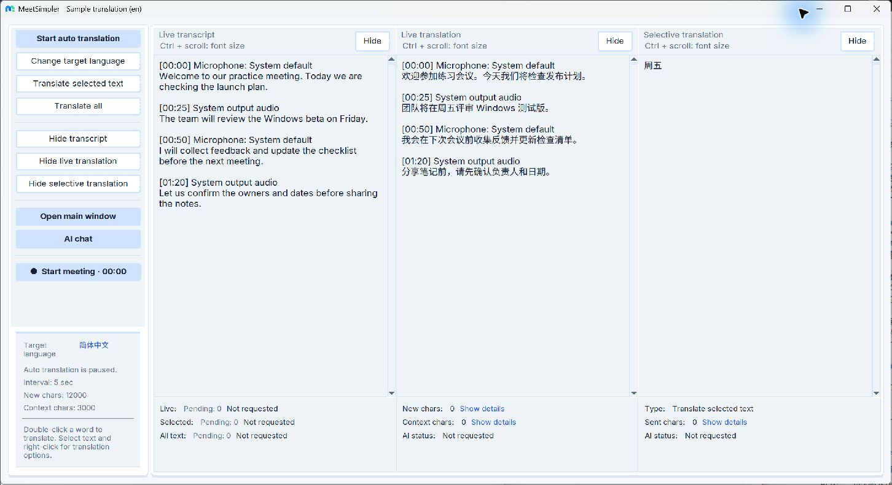
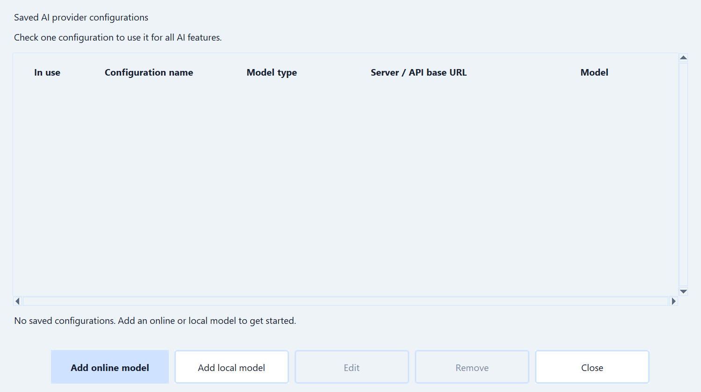

A look inside MeetSimpler.
See where you capture a meeting, read the transcript and work with AI. These snapshots show the actual Windows interface with sample meeting text, without recording audio or making AI requests.
The same interface also works for lectures, audio and video recordings, podcasts and personal notes. The meeting labels shown in these snapshots remain the same in the app.
These snapshots show the current interface with sample content. Choose a page language to see the matching app interface. Follow the start guide for setup and capture instructions.
Live analysis and translation · Capture screenshots · Record video · Desktop shortcuts
Follow the start guideYour meeting workspace.
The dashboard brings meeting controls, a transcript in foldable blocks and timed summaries together. Use Timed summary to control automatic summaries and Live analysis to open the Analysis workspace.
- Use Start meeting to begin and End meeting to finish.
- Read confirmed speech in Live Transcript; temporary recognition appears underneath.
- Use Summary links in the transcript to open the matching timed summary. Fold or unfold blocks to focus your reading.
- Use Meeting folder to find the locally saved records.
This demo shows the setup reminders before a speech model and AI model have been selected. The transcript and summary are sample text.
Learn how to start your first meeting
Ask a question while the context is fresh.
Select AI chat from the dashboard to open a separate workspace. Ask your configured provider to explain a discussion, extract decisions or draft follow-up notes.
- Use the message box and Send to ask your own question.
- Select Partial summary to summarize a chosen time range.
- Select Final summary after the meeting has finished saving.
- For questions about the discussion, enable Meeting context: On and Transcript context: On in the sidebar before sending.
- Review the context and files included in your request before sending.
- Use Voice input to dictate, or open the right-click menu on selected text and choose Ask AI to explain or Ask AI to summarize.
The example response is sample text. Meeting context and transcript context are on in this snapshot. AI features use your configured provider and may incur provider charges.
Learn how to review and save the results
Analyze speech as it arrives.
Open Live analysis to read the transcript, live analysis and selective analysis in separate columns. Choose your target language and enable Summary, Translation or both. Source opens the input for a result; Update regenerates it.
This sample shows translated speech, a chunk summary and a selective result. Live analysis is paused and no AI request was sent. The selectable text and foldable sections are the actual desktop widgets.
Explore the Analysis workspace
Connect the AI provider you choose.
Open Settings → AI provider config to enter a compatible API connection, choose a model and check that it works.
- Enter the provider's Server / API base URL and API key.
- Use Select AI model, or Edit manually when needed.
- Run Test connection, then select Save.
- Review Settings → AI context settings to understand the information sent to AI.
The API key and model fields are left unconfigured. The app's preset API URL is shown; no real credentials are included.
Follow the AI setup steps
Try a short practice meeting.
The start guide takes you from downloading the Windows app to checking your first transcript and summary.
Set up MeetSimpler